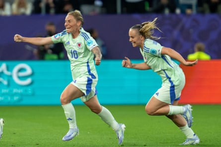

I t had to be her. Wales’s debut at a European Championship has meant a group stage full of new experiences, but it felt fitting that a 38-year‑old Jess Fishlock, double Champions League winner and icon of the women’s game, would register the first Wales goal in a major tournament against France on Wednesday night.
Three years ago, it felt cosmically appropriate that it should be Gareth Bale who scored the only Wales goal of the 2022 World Cup, a Welsh legend ticking off another career ambition before retirement. But unlike the postmortems and recrimination prompted by such a disappointing performance from the men’s team in Qatar, this time there is no judgment from the Welsh support out in Switzerland, only pride. Wales face England on Sunday having lost their first two games of Group D, and yet there is no doubt back home that Rhian Wilkinson’s team are history makers.
The women’s game in Wales is growing at a rapid rate, and the Red Wall, the thousands of drunken but good-natured cultural attaches who have followed the men’s team for years, have begun to support the women’s team with the same fervour. There were just under 4,000 in attendance at the first game against the Netherlands, outnumbering and outsinging the Dutch, a fact not lost on this Welsh squad, who remember away followings numbering in single digits.
A team of ultra-competitive, professional footballers competing at a major tournament will not want to hear that the event had more meaning than a 3-0 defeat , but as thousands of Welsh and Dutch supporters participated in the fan walk to the Allmend Stadion in Lucerne, it felt like a day pulsing with significance.
Some of the details surrounding the match could bewilder the uninitiated. The Netherlands captain, Sherida Spitse, has more caps than the Wales team has played games since they were officially sanctioned by the Football Association of Wales in 1993. Two years before the Netherlands won Euro 2017 , the Welsh winger Rachel Rowe was still combining football with her work as a prison officer at HMP Swansea.
I stared at the giant Wales shirt that was projected high above the concourse to Swiss commuters at Zurich train station, and remembered that in the 1990s the women’s side played in hand‑me‑down kits from the men’s team and were still made to wear men’s fit training gear in the age of the smartphone. If the progress being made by women’s football in Wales feels dizzying, that’s because it is.
Wales are not mathematically eliminated from the Euros yet, although they need to beat an England team who are now purring into gear by four clear goals and hope France beat the Netherlands to progress. But the real legacy of this team will be decided after the tournament is over.
Jess Fishlock races away after her equaliser against France, pursued by Lily Woodham.Photograph: Sports Press Photo/Getty Images
On Wednesday, ITV viewers were treated to the analytical brain of Jayne Ludlow, one of the people most qualified to talk about where Welsh women’s football has come from as well as the huge task faced by this current group of players. As a treble winner with Arsenal she drove standards with Wales, and twice came unbearably close to qualifying during her own tenure as Wales manager. Like Fishlock and Wales’s other high-profile female footballers, Ludlow reached the highest level of the game despite and not because of the system, and the challenge for the FAW is now to capitalise on the increased interest in women’s football and ensure the conveyor belt of talent doesn’t end with this generation of players.
At the heart of this project is Laura McAllister, a former Wales captain and now a vice-president of Uefa. The Cymru Football Foundation has invested millions in more inclusive facilities for women and girls across Wales to drive participation. On the back of Euro 2025 qualification, the CFF launched Environments For Her, a £1m fund for clubs solely dedicated to female-friendly off-pitch facilities, a first of its kind. But as McAllister, an international footballer whose career was conducted in near anonymity, puts it: “What this glorious team has given us are the heroes and role models that make girls and boys want to run out on the pitch themselves. They’ve created a massive surge in demand that we simply have to find a way to meet.”
Although England seemed ominously impressive against the Netherlands on Wednesday night , there were reasons to be positive after Wales’s performance against France in St Gallen. The team played with an intensity that was missing against the Dutch in Lucerne, energy levels in the opening game perhaps hindered by the game being played in sunlight bright enough to melt a cannonball and a heat so stifling it made queueing for a hotdog feel like we were watching Wales play Venus (away). I now understand why Steve Staunton sang the Irish national anthem at USA 94 in a baseball cap.
I attended the opening game against the Netherlands with my 10-year-old daughter, for whom stories of girls cutting their hair short and pretending to be boys in order to play seem as divorced from reality as when I talk about how her great-grandfather was a coalminer or that I didn’t try black pepper until I was at university. Her first away game might have ended in defeat, but at passport control in Zurich airport she was given a piece of advice by an away veteran from Machynlleth, whose first experience travelling abroad to watch Wales had been to watch the men lose 7-1 against the Dutch in Eindhoven in 1996. “If this is your first Wales away I’d stop now,” he said, “because it’s addictive.”